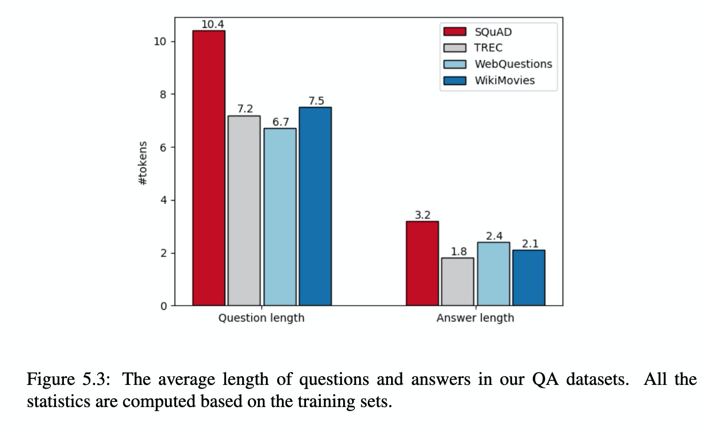

Neural Reading Comprehension and beyond-2¶
Part II Neural Reading Comprehension: Applications¶
Chapter 5 Open Domain Question Answering¶
在第一部分中，我们描述了阅读理解的任务：阅读理解的确切表达和发展，神经阅读理解系统的关键组成部分以及未来的研究方向。但是，目前尚不清楚阅读理解仅仅是用作衡量语言理解能力的一项任务，还是可以使任一有用的应用成为可能。在第二部分中，我们将回答这个问题，并讨论我们在构建将神经阅读理解作为其核心组件的应用程序方面所做的努力。
在本章中，我们将开放域问答作为阅读理解的一种应用。开放域问答一直是NLP历史上的一个长期问题。开放域问题解答的目标是基于大量非结构化自然语言文档，结构化数据(例如知识库)，构建能够自动回答人类可能提出的任何(类事实)问题的自动计算机系统。 )，半结构化数据(例如表格)或其他形式的图片或视频。
本章安排如下。我们首先对开放域问题解答和历史上一些著名的系统进行高层次的概述(第5.1节)。接下来，我们介绍一个我们构建的名为DRQA的开放域问答系统(第5.2节)，该系统旨在回答英语维基百科中的问题。它本质上结合了信息检索模块和我们在3.2节中介绍的高性能神经阅读理解模块。我们将进一步讨论如何通过从检索模块创建受远程监督的训练示例来改进系统。然后，我们对多个问答基准进行全面评估(第5.3节)。最后，我们将在5.4节中讨论当前的局限性，后续工作和未来的方向。
5.1 A Brief History of Open-domain QA¶
自1960年代以来，问题解答是NLP系统最早的任务之一。最早的现代系统是基于文本的问答系统，它是PROTO-SYNTHEX系统。系统首先根据问题中的内容词制定查询，根据与问题重叠的频率加权项检索候选答案句子，最后进行依赖项解析匹配以获得最终答案。另一个著名的系统MURAX旨在使用浅层语言处理和信息检索技术回答GROLIER在线百科全书中的一般知识问题。
自1999年以来，开放域问题解答的兴趣有所增加。问题解答赛道首次被纳入TREC比赛。首先定义任务，系统检索包含开放域问题答案的文本片段。它刺激了当时开发的各种问题解答系统，并且大多数系统由两个阶段组成：一个IR系统，用于选择与该问题产生的查询相匹配的前n个文档或段落；以及一个基于窗口的单词评分系统，用于查明可能的答案。
最近，随着知识库 KB 的发展，例如FREEBASE和DBPEDIA，在知识库的问答中，出现了许多创新。基于FREEBASE的WEBQUESTIONS和SIMPLEQUESTIONS或基于自动提取的KB(例如OpenIE三元组和NELL)。基于知识的问题解答已经取得了很多进展，主要的方法是基于语义解析或信息提取技术。但是，知识库具有固有的局限性(不完整和固定的模式)，这促使研究人员最近回到原始文本答复的原始场景中。

还有大量使用大量资源的高度开发的全流水线 QA 方法，包括文本集合(网页，Wikipedia，新闻专线文章)和结构化知识库(FREEBASE，DBPEDIA等)。几个著名的系统包括Microsoft的ASKMSR，IBM的DEEPQA和YODAQA。 ASKMSR是基于搜索引擎的问题解答系统，它依赖于“数据冗余而不是对问题或候选答案的复杂语言分析”。DEEPQA是一个非常复杂的系统，由许多不同的部分组成，它依赖于非结构化信息以及结构化数据来生成候选答案或对证据进行投票。图5.1说明了高级架构。 YODAQA是一个以 DEEPQA 为模型的开源系统，特别是将网站，数据库和 Wikipedia 组合在一起。与这些方法进行比较可为性能的“上限”基准提供有用的参照。
我们的DRQA系统(第5.2节)专注于使用Wikipedia作为唯一知识源的问题解答，例如在百科全书中寻找答案时所做的回答。在此之前，已经有很多关于使用Wikipedia作为资源的问题解答模型。 Ryu 等人使用基于 Wikipedia 的知识模型执行开放域问题解答。他们根据不同类型的半结构化知识(例如信息框，文章结构，类别结构和定义)将文章内容与其他多个答案匹配模块结合在一起。同样，Ahn等人也将Wikipedia作为文本资源与其他资源相结合，在这种情况下，它还具有对其他文档的信息检索。Buscaldi和Rosso还从Wikipedia挖掘知识以进行问题解答。 他们没有将其用作寻找问题答案的资源，而是专注于验证其问题解答系统返回的答案，并使用Wikipedia类别来确定应与预期答案匹配的一组模式。 在我们的工作中，我们仅考虑文本理解，并使用Wikipedia文本文档作为唯一资源，以强调阅读理解的任务。 我们相信，添加其他知识资源或信息将进一步改善我们系统的性能。
5.2 Our System: DRQA¶
5.2.1 An Overview¶
在下文中，我们描述了我们的系统DRQA，该系统着重于使用英语维基百科作为文档的唯一知识源来回答问题。我们有兴趣构建一个通用知识的问题回答系统，该系统可以回答包含答案并可以从Wikipedia中提取的任何形式的问题。我们选择使用Wikipedia的原因有很多：
- Wikipedia是不断发展的大规模，丰富，详细信息的来源，可以促进智能机器的发展。与诸如FREEBASE或DBPEDIA之类的知识库(KB)一样，它们对于计算机来说较容易处理，但对于开放域问题的回答却过于稀疏，因此Wikipedia包含人类感兴趣的最新知识。
- 许多阅读理解数据集(例如SQUAD)建立在Wikipedia上，因此我们可以轻松利用这些资源，我们将在不久后对其进行描述。
- 总体而言，维基百科的文章简洁，高质量且格式正确，因此是开放域问答非常有用的资源
使用Wikipedia文章作为知识源会导致问题解答的任务结合了大规模开放域问答和机器阅读理解的挑战。为了回答任何问题，必须首先检索超过500万个项目中的几篇相关文章，然后仔细扫描它们以找出答案。这让人想起传统的TREC QA系统是如何工作的，但是我们认为神经阅读理解模型将在阅读检索到的文章/段落以获取最终答案方面发挥关键作用。如图5.2所示，我们的系统主要由两个组件组成：(1)用于查找相关文章的DOCUMENT RETRIEVER模块，以及(2)用于从单个文档或少量集合中提取答案的阅读理解模型DOCUMENT READER。
我们的系统将Wikipedia视为文章的集合，并且不依赖于其内部图结构。因此，我们的方法是通用的，可以转换为其他文档，书籍甚至每日更新的报纸。接下来，我们将详细介绍这两个组件。
5.2.2 Document Retriever¶
遵循经典的QA系统，我们使用高效的(非机器学习)文档检索系统来首先缩小搜索范围，并专注于仅阅读可能相关的文章。 与内置的基于 ElasticSearch 的 Wikipedia 搜索API相比，简单的倒排索引查找后再进行(term vector model scoring)术语向量模型评分，在许多任务类型上都能很好地完成此任务。将文章和问题作为TF-IDF加权词袋向量进行比较。
我们通过使用 n-gram 特征考虑局部单词顺序来进一步改善我们的系统。我们性能最好的系统通过使用散列将bigram映射到2^{24} bins(with an unsigned murmur3 hash)，从而在保持速度和内存效率的同时使用bigram计数。 通过将DOCUMENT RETRIEVER设置为返回给定任何问题的5篇Wikipedia文章，我们将其用作完整模型的第一部分。 这些文章然后由DOCUMENT READER处理。
5.2.3 Document Reader¶
DOCUMENT READER 旨在阅读所有段落并从中提取可能的答案。这正是我们在基于跨度的阅读理解问题中所做的设置，我们可以将在3.2节中描述的STANFORD ATTENTIVE READER模型直接加入此流水线中。
我们将出现在前5篇文章中的每个段落都输入经过训练的文档阅读器，它可以用信心分数来预测答案范围。 为了使分数在一个或多个检索到的文档中的各个段落之间兼容，我们使用非归一化指数，并在所有考虑的段落范围内采用argmax 作为最终预测。 这只是一个非常简单的启发式方法，并且有更好的方法可以汇总不同段落的证据。 我们将在5.4节中讨论未来的工作。
5.2.4 Distant Supervision¶
我们已经建立了完整的流水线，其中集成了经典的检索模块和我们以前的神经阅读理解组件。剩下的关键问题是我们如何为开放域问答设置训练该阅读理解模块？
最直接的方法就是将SQuAD数据集作为训练语料库使用，该数据集也建立在Wikipedia段落的基础上。但是，此方法受到以下方式的限制：
- 正如我们在第4.2节中先前讨论的那样，在SQUAD中的问题是在注释者看到段落之后编写的，以确保可以通过段落中的跨度来回答。当人们首先想到一个问题并尝试从Web或其他来源找出他的答案时，这种分布是非常具体的，并且与现实世界中的问题解答不同。
- 许多SQUAD问题确实与上下文有关。这些问题本身无法理解，因此对于开放域问答毫无用处。 Clark和Gardner 估计SQUAD中约32.6％的问题依赖于文档或段落。
- 最后，SQuAD的大小很小(8万个训练示例)。 如果我们可以收集更多的培训示例，则应该可以进一步提高系统性能。
为了克服这些问题，我们提出了一种可以从其他问答资源中自动创建其他训练示例的方法。想法是重新使用我们构建的有效信息检索模块：如果我们已经有一个问题答案对(q,a)，并且检索模块可以帮助我们找到与问题 q 相关且段落中包含答案片段 a 的文章 p，然后我们可以以(p,q,a)三元组的形式创建一个远程监督的训练示例，以训练阅读理解模型： $$ f:(q,a) \to (p,q,a) \ if p \in \text{Document Retriever} (q) \text{and} a \text{appears in} p $$ 这个想法与使用 distant supervision 进行关系提取的流行方法很相似。尽管这些示例在某种程度上可能很嘈杂，但它提供了一种便宜的解决方案来为开放域问题解答创建distant supervision的示例，并且可以是SQUAD示例的有用补充。 我们将在第5.3节中描述这些远程监督示例的有效性。
5.3 Evaluation¶
5.3.1 Question Answering Datasets¶
第一个问题是我们应该对哪个问题回答数据集进行评估。 正如我们所讨论的，SQUAD是目前可用于回答问题的最大的通用QA数据集之一，但与开放域QA场景有很大不同。 我们建议在针对开放域问答开发的其他数据集上训练和评估我们的系统，这些数据集以不同的方式构造。 因此，我们采用以下三个数据集：
TREC 数据集基于TREC QA任务基准。我们使用大型版本，其中包含总共2180个问题。
WebQuestions 数据集旨在回答Freebase KB中的问题。它是通过GOOGLE SUGGEST API抓取问题，然后使用Amazon Mechanical Turk获得答案而创建的。我们使用实体名称将每个答案转换为文本，以使数据集不引用Freebase ID，而仅由纯文本问题对组成。
WikiMovies 数据集在电影领域包含96k问答对。这些示例最初是从OMDB和MOVIELENS数据库创建的，因此可以通过使用 Wikipedia 的子集作为知识源(电影领域的标题和文章的第一部分)来回答这些示例。
我们要强调的是，这些数据集不一定是在来自 Wikipedia 回答的背景下收集的。 TREC数据集旨在基于文本的问题解答(TREC文档集主要由新闻专线文章组成)，而WEBQUESTIONS和WIKIMOVIES则主要用于基于知识的问题解答。我们将所有这些资源放在一个统一的框架中，并测试我们的系统对所有问题的回答程度，希望它能反映出一般知识问答的性能。


表5.1和图5.3给出了这些问答数据集的详细统计信息。我们可以看到，SQUAD示例的分布与其他QA数据集完全不同。由于构造方法的原因，SQUAD的问题更长(平均10.4个令牌与6.7-7.5个令牌)。同样，所有这些数据集都有简短的答案(尽管SQUAD中的答案稍长)，而且大多数都是事实。
请注意，这些问答数据集中的许多问题可能有多个答案(请参见表5.1的“answers”列)。例如，WEBQUESTIONS中的问题：在巴基斯坦人说什么语言？有两个有效答案：英语和乌尔都语。由于我们的系统旨在返回一个答案，因此如果评估给出任何答案，则我们的评估会认为该预测是正确的。
5.3.3 Document Retriever Performance¶

我们首先检查所有 QA 数据集上检索模块的性能。 表5.2将5.2.2节中描述的两种方法的性能与Wikipedia搜索引擎的性能进行了比较，以查找包含给定问题的答案的文章。
具体来说，我们计算每个系统所返回的前5个相关页面中的至少一个相关问题的答案，这些问题的答案与它们的任何关联答案的文本跨度都至少一样。
所有数据集上的结果均表明，我们的简单方法优于Wikipedia搜索，尤其是使用bigram哈希。 我们还比较了使用Okapi BM25进行检索或使用词嵌入空间中的余弦距离(通过将问题和文章编码为词袋向量)，我们发现两者的效果都较差。
5.4 Future Work¶
我们的DRQA证明，将信息检索与神经阅读理解相结合是开放域问题回答的有效方法。我们希望我们的工作朝着这一研究方向迈出第一步。但是，我们的系统仍处于早期阶段，许多实现细节可以进一步改进。
我们认为以下研究方向将（极大地）改善我们的DRQA系统，应作为未来的工作。确实，在我们发布我们的DRQA系统后的第二年中，已经实现了一些想法，我们还将在本节中对其进行详细描述。
- Aggregating evidence from multiple paragraphs.
- Using more and better training data.
- Making the DOCUMENT RETRIEVER trainable.
- Better DOCUMENT READER module.
- More analysis is needed.